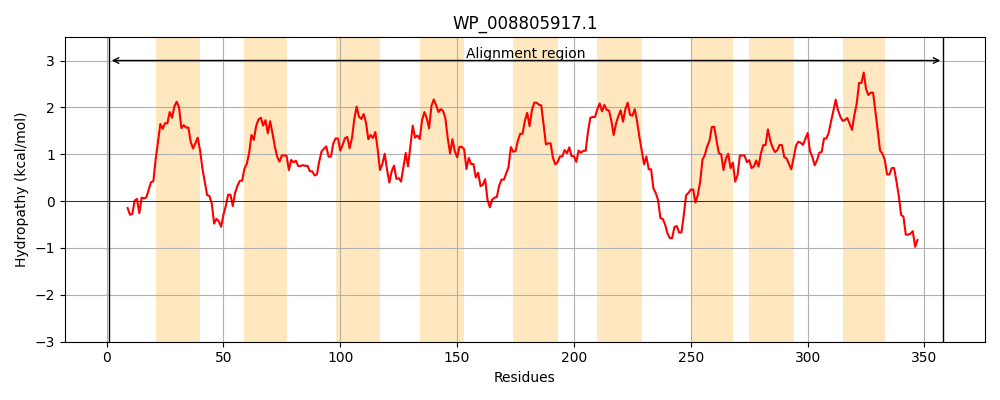
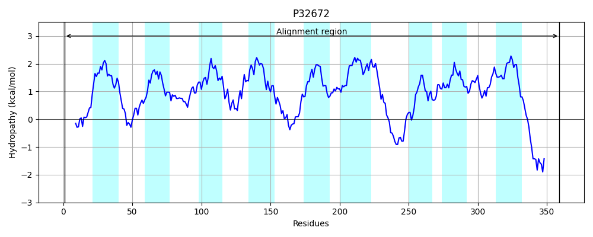

Hit Accession: P32672
Hit TCID: 4.A.2.1.10
Hit Description: gnl|BL_ORD_ID|9849 gnl|TC-DB|P32672|4.A.2.1.10 Fructose-like permease IIC component 2 OS=Escherichia coli (strain K12) GN=frwC PE=3 SV=1
Mach Len: 359
e:0.000000
Query TMS Count : 9
Hit TMS Count: 9
TMS-Overlap Score: 8.250000
Predicted Substrates:None
BLAST Alignment:
Score: 1573 , Bit scores: 610 bits, E-value: 0.0e+00, Alignment length: 359, Percentage identity: 85
Query: 1 MNELVQILKNTRQHLMTGVSHMIPFVVSGGILLAVSVMLYGKGAVPDAATDPNLKKLFDIGVAGLTLMVPFLAAYIGYSISDRAALAPCAIGAWVGNSFGAGFFGALIAGMIGGLVVYYLKKIPVHKVLRSVMPIFIIPIVGTFITAGIMMWGLGEPVGALTANLTGWLQGMREGSIVVLAIIMGLMLAFDMGGPVNKVAYAFMLICVSQGVYSVVAIAAVGIAVPPLGMGLATLIGRKYFTAEERETGKAALVMGCVGVTEGAIPFAAADPLRVIPANMIGAASGCVTAALMGAQCYAGWGGLIVLPVVQGKLGFVAALLVGACVSAACVILLKAFAKKKPTDV-AADDELDLDFEIN 358
MNELVQILKNTRQHLMTGVSHMIPFVVSGGILLAVSVMLYGKGAVPDA DPNLKKLFDIGVAGLTLMVPFLAAYIGYSI++R+ALAPCAIGAWVGNSFGAGFFGALIAG+IGG+VV+YLKKIPVHKVLRSVMPIFIIPIVGT ITAGIMMWGLGEPVGALT +LT WLQGM++GSIV+LA+IMGLMLAFDMGGPVNKVAYAFMLICV+QGVY+VVAIAAVGI +PPLGMGLATLIGRK F+AEERETGKAALVMGCVGVTEGAIPFAAADPLRVIP+ M+G+ G VTAAL+GAQCYAGWGGLIVLPVV+GKLG++AA+ VGA V+A CV +LK+ A+K + +D+LDLDFEIN
Sbjct: 1 MNELVQILKNTRQHLMTGVSHMIPFVVSGGILLAVSVMLYGKGAVPDAVADPNLKKLFDIGVAGLTLMVPFLAAYIGYSIAERSALAPCAIGAWVGNSFGAGFFGALIAGIIGGIVVHYLKKIPVHKVLRSVMPIFIIPIVGTLITAGIMMWGLGEPVGALTNSLTQWLQGMQQGSIVMLAVIMGLMLAFDMGGPVNKVAYAFMLICVAQGVYTVVAIAAVGICIPPLGMGLATLIGRKNFSAEERETGKAALVMGCVGVTEGAIPFAAADPLRVIPSIMVGSVCGAVTAALVGAQCYAGWGGLIVLPVVEGKLGYIAAVAVGAVVTAVCVNVLKSLARKNGSSTDEKEDDLDLDFEIN 359 | Protein Hydropathy Plots: |
|---|
|  |  |
Pairwise Alignment-Hydropathy Plot:
|
|---|
 |